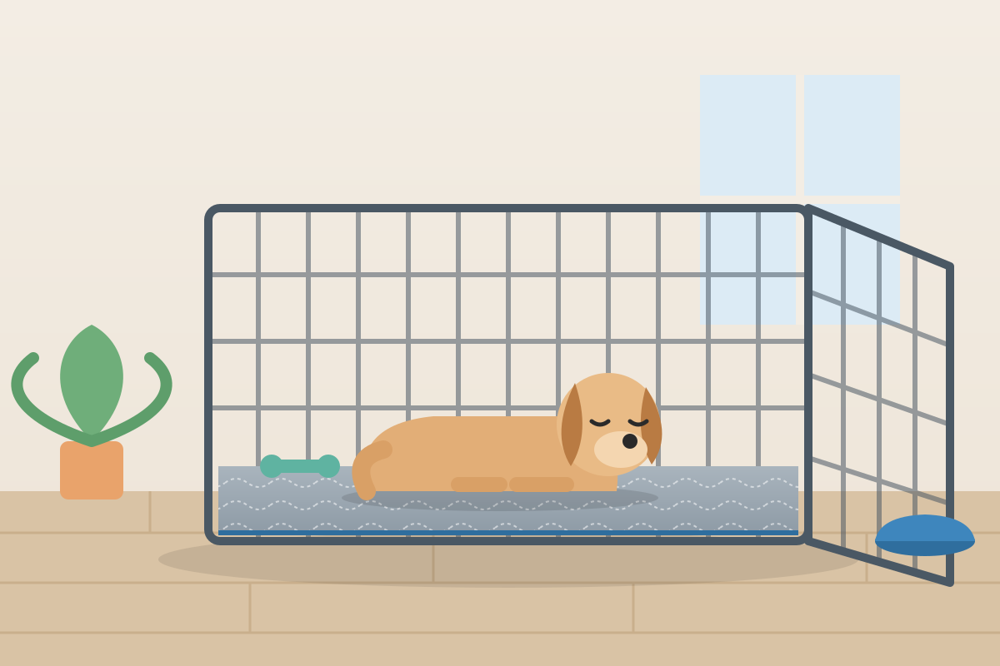
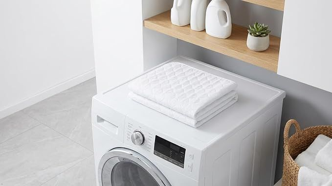

すべての足に、乾いた居場所を
トイレトレーニング中の子犬、シニア犬、術後の猫。ペットには清潔で乾いた場所が、飼い主には床やクレート、ソファを清潔に保つことが必要です。VELCURA の洗えるペット用シーツは、爪、かじり、毎日の洗濯に耐えるよう作られています。

ペット用シーツのすべて

子犬のトイレトレーニング
トイレトレーニングでのシーツの使い方をステップごとに。子犬に負けない仕様も。
見てみる
シニア・療養中のペット
失禁、足腰の衰え、術後の回復：飼い主が直面することと、シーツが役立つ点。
見てみる
クレート・ソファ・車
クレートのサイズ表、ソファやベッドの保護、車の荷室、猫トイレまわり。
見てみる
Paw Guard の仕様
生地、サイズ、カラー、そして爪や滑りに関する表示を裏付ける試験。
見てみる
ペット用シーツの洗い方
尿のにおいを落とす方法、洗濯の手順、獣医に相談すべきとき。
見てみる
ペット用シーツの市場
市場規模、米国・ヨーロッパ・日本のペット数、小売のシグナル。
見てみる洗える vs 使い捨てのペットシーツ
| 比較項目 | 使い捨てペットシーツ | VELCURA 洗えるペット用シーツ |
|---|---|---|
| 破れ | 紙や綿状の素材は簡単に破れる | 目の詰まったポリエステルニット、二重縫いの縁取り |
| すべり | タイルやフローリングの上で滑る | シリコン滑り止めドット |
| サイズ | 一般的に約 22 × 23 in | 18 × 24 in から 36 × 60 in まで、クレートに合わせたサイズも受注生産 |
| 端からの漏れ | 吸水しきると液体があふれる | 全面に TPU 防水層 |
| ごみ | 粗相1回ごとに1枚をごみ箱へ | 300回の洗濯に対応 |
飼い主の不満
洗えるトイレシーツのレビューまとめでは、いつも同じいくつかの問題が挙がります。そのひとつひとつが設計上の選択に対応しています。
| よくある不満 | VELCURA の対策 |
|---|---|
| 「子犬にかじられて穴が開いた」 | 目の詰まったニット表地、ゆるいタグなし、二重縫いの縁取り。小さな子犬からは目を離さないで |
| 「なかなか乾かない」 | ポリエステルニットの表地と用途に合った吸水芯の重さで、早く乾く |
| 「1回洗ったら縮んだ」 | 防縮加工済みの生地、寸法変化率目標3%以下 |
| 「防水じゃない」 | ラミネート TPU、50 / 100 / 300回洗濯後に耐水圧試験 |
| 「洗ってもにおう」 | まず水ですすぎ、酵素系添加剤を使い、柔軟剤なし。洗い方ガイドをご覧ください |
| 「床の上で滑る」 | Paw Guard はシリコンドットの裏地が標準 |
飼い主からよくある質問
子犬は洗えるシーツをかじりますか？
かじる子もいます。布製品はどれもかじられる可能性があるため、Paw Guard の表地はほつれやタグのない目の詰まったポリエステルニットで、縁取りは二重縫いです。小さな子犬からは目を離さず、穴が開いたシーツは取り除いてください。
洗えるシーツは、香り付きの使い捨てシーツのように子犬を誘導できますか？
標準品は無香料です。シーツでのトレーニングは習慣で身につきます。同じ場所、同じタイミング、すぐにほめること。ブランド向けに誘引加工を加えることもできますが、表示には試験データの裏付けが必要です。
ペット1匹に何枚必要ですか？
毎日使うなら3–4枚。敷いておく1枚、洗濯中の1枚、乾いた予備1–2枚です。24時間ごとに洗えば、においを抑えられます。
猫にも使えますか？
はい。猫トイレのまわりに小さいシーツを敷けば飛び散った砂や粗相を受け止め、大きいシーツはシニア猫が眠るベッドやソファを守ります。
ペット用シーツのラインを立ち上げますか？
販路、サイズ、目標価格をお知らせください。1営業日以内に Paw Guard の仕様書と数量別価格をお送りします。